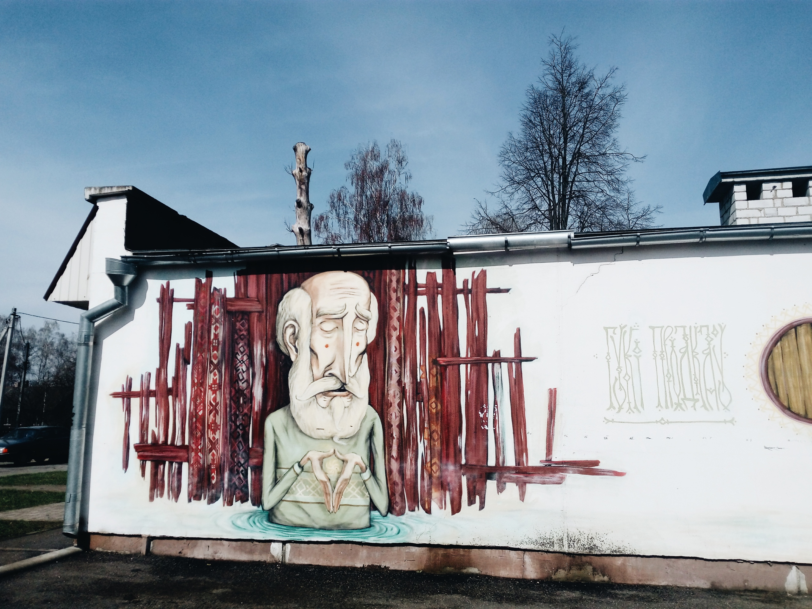

Поехать в Барановичи было странной идеей-фикс.
Начиная узнавать у знакомых, как доехать, что увидеть,
ловишь ответный вопрос «зачем тебе Барановичи?», но хочется – значит надо.
⠀Барановичи для нас - это огромный мост,
церковь, солдатики, самолеты (везде), граффити, БарГу,
Несквик с апельсиновой цедрой, музей ЖД за рубль 50, Полет,
Любовь, Кристина, Ксения, у Васи (это все ларьки), печенье амур,
зефир (много), ромовые звезды.
